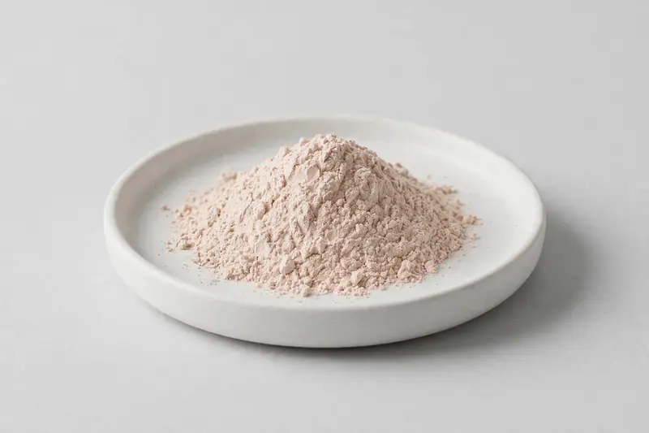

Myrciaria dubia fruit, offered for clean-label vitamin C-oriented formulations.

Overview
Camu Camu Extract is produced from the fruit of Myrciaria dubia and is traded around its natural vitamin C content, commonly in the 10–20% range. It appeals to brands building clean-label vitamin C concepts from a whole-fruit source. We source through vetted partner producers and confirm natural vitamin C level, fruit part and testing scope against your target specification.
Specifications below reflect commonly requested options in the market — not a stock list. Share your target spec and we'll confirm exactly what we can supply, honestly.
| Specification | Details |
|---|---|
| Botanical identity | Myrciaria dubia, fruit |
| Marker compound | Natural vitamin C — commonly requested: 10–20% (titration or HPLC) |
| Appearance | Light beige to pale pinkish-tan fine powder |
| Mesh size | Typically 80–100 mesh (confirm per inquiry) |
| Testing | COA/TDS arranged on request; scope agreed per your spec |
Applications
Documentation
We don't claim in-house labs or certifications we don't hold. COA and TDS documents can be arranged on request, and testing scope is agreed against your specification before supply.
FAQ
Related products
Lycium barbarum
Key marker: LBP
View specs →Sophora japonica
Key marker: Quercetin
View specs →Polygonum cuspidatum
Key marker: Trans-Resveratrol
View specs →Piper methysticum
Key marker: Kavalactones
View specs →Crocus sativus
Key marker: Crocin
View specs →Send your target spec and volumes — we'll respond with a tailored quotation.
Request a Quote